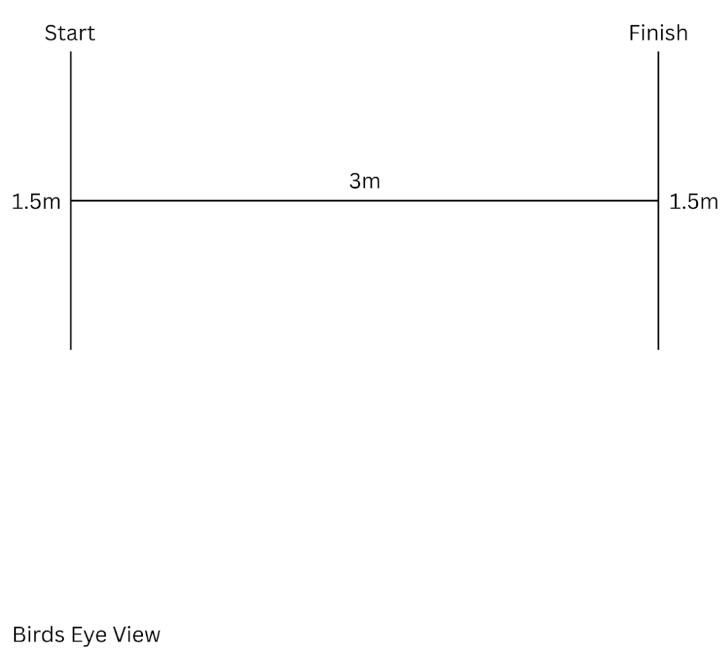
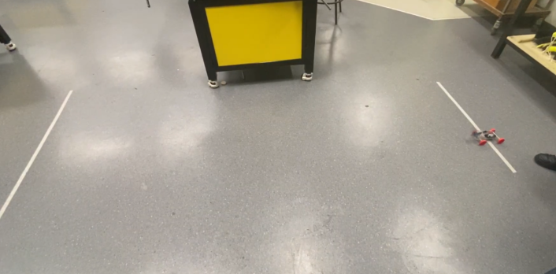
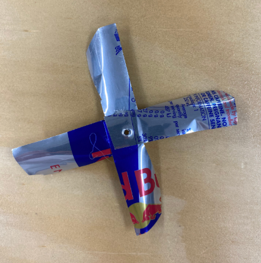
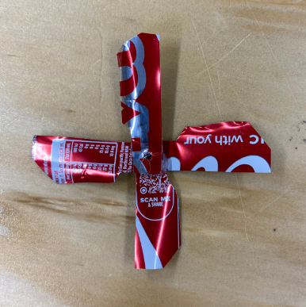
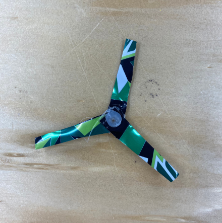
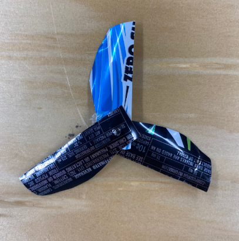

Results
Step by Step Trial Process
| Images | Instructions |
|---|---|
| N/A |
Step 1: Acquire the required materials: 1x measuring tape 1x roll of tape to mark points 1x device/camera to film and time car |
|  |
Step 2: Measure out 3 metres on a flat and clear surface Step 3: Cut out a section (1.5m) and place it on each end of the 3 metres |
|  |
Step 4: Place camera (or get someone to hold the camera) and start recording Step 5: Position the car at the one line of the 3 metre space and point it towards the other side so when let go it will travel towards the opposite 3 metre marked point. |
| N/A |
Step 6: Finish filming and record the results in a table Step 7: Repeat from step 4 to conduct multiple trials (conduct 5 trials at a minimum) Step 8: Repeat from step 4 after making a modification to the design. (including the set of trials). Do at least 2 sets with different modifications. |
| Propeller 1 | Propeller 2 | Propeller 3 | Propeller 4 |
|---|---|---|---|
|  |  |  |  |
Trial Tables - Testing
| Trial | Tested Variable (Propeller) | Distance Travelled (cm) | Observations |
|---|---|---|---|
| 1-5 | Propeller 1 used. | 300 | This trial by far performed the best, the dragster had strong immediate acceleration but due to various issues the car turned in the last 25% of the distance. The dragster was able to complete the course. |
| 6-10 | Propeller 2 used. | 0 | Small amounts of force was generated by the propeller but was unable to start. The car was unable to start. |
| 11-15 | Propeller 3 used. | 0 | Almost no tangible backward force was generated and almost all air was directed outwards. The car was unable to start. |
| 16-20 | Propeller 4 used. | 300 | The car was able to start but would slow almost to a stop every 10-20 cm. The dragster was able to complete the course. |
| 21-25 | Angle of propeller 4 changed and weight was reduced. Rubber bands were also added to support wheel traction. | 0 | Improvements to the car allowed the dragster to move faster and with less of a noticeable turn but was unable to beat trials 1 through 5. The dragster to complete the course. |
| Trials 1-5 | |||
|---|---|---|---|
| Trial Number | Result (seconds) | Average (seconds) | Video |
| 1 | 5.1 | 5 | |
| 2 | 5.5 | ||
| 3 | 5.2 | ||
| 4 | 4.9 | ||
| 5 | 5 | ||
| Trials 6-10 | |||
|---|---|---|---|
| Trial Number | Result (seconds) | Average (seconds) | Video |
| 6 | N/A | N/A | |
| 7 | N/A | ||
| 8 | N/A | ||
| 9 | N/A | ||
| 10 | N/A | ||
| Trials 11-15 | |||
|---|---|---|---|
| Trial Number | Result (seconds) | Average (seconds) | Video |
| 11 | N/A | N/A | |
| 12 | N/A | ||
| 13 | N/A | ||
| 14 | N/A | ||
| 15 | N/A | ||
| Trials 16-20 | |||
|---|---|---|---|
| Trial Number | Result (seconds) | Average (seconds) | Video |
| 16 | 18 | 17.6 | |
| 17 | 17.6 | ||
| 18 | 15.9 | ||
| 19 | 18.2 | ||
| 20 | 18.1 | ||
| Trials 21-25 | |||
|---|---|---|---|
| Trial Number | Result (seconds) | Average (seconds) | Video |
| 21 | N/A | N/A | |
| 22 | N/A | ||
| 23 | N/A | ||
| 24 | N/A | ||
| 25 | N/A | ||
Failures
The initial design of the car was built around a chassis made from a small offcut of styrofoam. Styrofoam is a lightweight material but the small size of the offcut meant the car was very compact with every component being packed tightly together. After a few trials were conducted the car was hardly moving. One possible explanation for this would be the uneven weight distribution and the lack of clean airflow compared to the final bottle-based design.
Another failure in the design was to do with the propellers. Propellers 2 and 3 were unable to generate enough thrust to move the car forward, most likely due to multiple factors which included the unoptimised angles and small blades which cost them to not efficiently push air backward and create the forward motion needed. Additionally, with the propeller’s 3 blade size being too short and narrow, it significantly limited the air that it could catch and push during the rotation. Because the blades were undersized they couldn't generate enough air resistance to push the car. This resulted in a propeller that was both inefficient and underpowered which added to the car’s lack of movement during the test when using this blade.
While propeller 2's main reason for the failure to push the car forward was due to that the propeller would direct air upwards rather than pushing air backwards which is needed for propelling the car forward. This was mainly caused by the extreme pitch of the blades. When the blades are angled too steep, they tend to start lifting air up vertically instead of pushing in the correct direction.
The original styrofoam body was too small, causing poor weight distribution, which made the car hard to move. While propellers 2 and 3 failed to move the car mainly due to their blade being too small or angled, propellers 2 couldn't catch enough air, and propeller 3 blew air up instead of backwards. These issues highlighted the need for improved weight distribution and better designed propellers for performance.
Asessment Against Criteria
The car built met all requirements dimension wise as the dragsters propeller stayed below the 200mm tip to tip diameter maximum while the dragster itself was no larger than the specific dimensions of 225 x 310 x 240mm. The desired track time of 5 seconds was not met possibly due to high expectations, unoptimized propeller designs or actual car design. When certain propellers were used the car was however able to propel itself for all 5 trials over the 3 meter track. In addition to this the dragster was also able to withstand high impacts, shocks and external forces while being composed of recycled materials that benefitted the cars performance. The car was unable to stay in a straight line during testing possibly due to misaligned wheels, a misangled motor or overall chassis errors created during construction.
Areas for Future Improvement
The dragster while being able to complete the required distance in a moderate time did not meet the majority of expectations, let alone exceed them. The version of the dragster was unable to run and was riddled with flaws, the second design while working in practice was clunky and did not meet expectations. In the future if this was to be done again firstly the car would be composed of a lighter more workable material such as balsa wood or a fibrous composite material such as carbon fibre or fibreglass. This would lessen weight while making cuts more precise allowing for a car that can not only move faster but also move smoother. Another change that could be implemented is the optimisation of propellers. The results gathered from the tests inferred that more blades at angles of approximately 20°- 50° improved performance. A more uniform angle stretching from tip to tip instead of increasing as the blade stretched upwards could also theoretically improve performance. Overall the car performed well but not perfectly, future iterations would seek to improve and fix issues by applying a range of material and design changes.